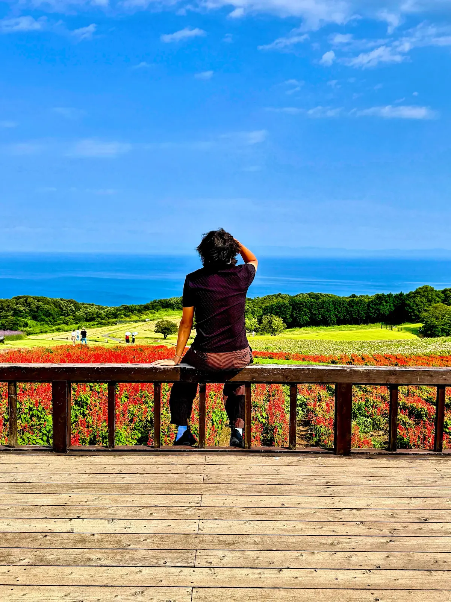
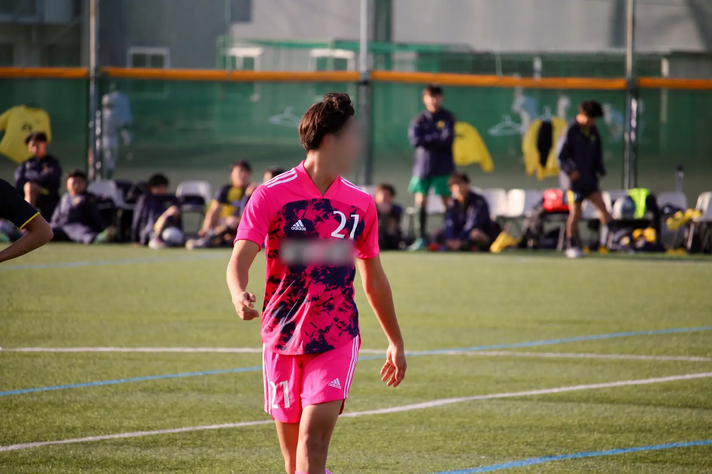

Riku Komine
Web Designer/Student
Web Designer/Student
大学生として学びながら、Webデザイン・Web制作に挑戦しています。
これまで長く続けてきたサッカーを終え、新しい挑戦としてWebの世界へ。
現在はHTML/CSSを中心に、デザインからコーディングまで学んでいます。
まだ学び始めたばかりですが、自分のアイデアを形にできることに面白さを感じています。
このサイトも、そんな自分らしさを伝える場所として、一からデザイン・制作しました。


高校3年間、全国大会出場を目標に本気でサッカーに打ち込んできました。
その経験から、一つの目標に向かってひたむきに努力し続ける生き方が好きになりました。
10年続けてきたサッカーを引退してからは、なんとなく大学に通う日々が続きました。
熱量を注げるものがないと気付き、もう一度本気で何かに挑戦したいと思いました。
新たな挑戦としてWebの世界に飛び込みました。
結果が出ないときこそ、腐らず自分にベクトルを向けること。
環境や周りのせいにせず、自分に何ができるかを考え、行動する。
そして、何事にも圧倒的な自信を持って挑戦すること。
自信を持てるだけの努力を積み重ね、自分の可能性を自分自身が一番信じる。
サッカーで培ったこの姿勢を大切に、これからも新しい挑戦を続けていきます。